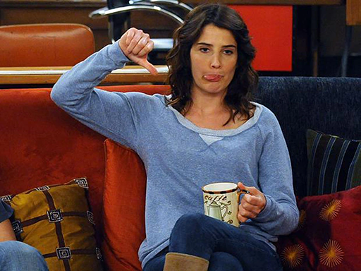
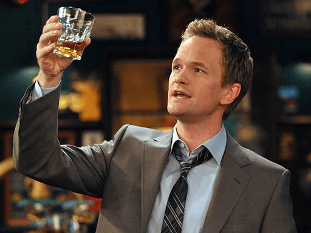
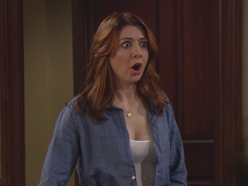
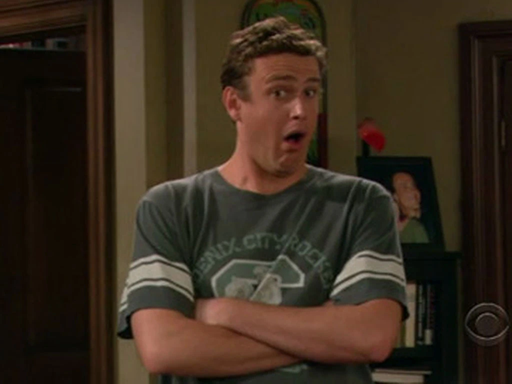

Interpretado por Josh Radnor. Theodore Evelyn Mosby es un arquitecto procedente de Ohio, que tiende a pensar demasiado y exagerar la gravedad de los hechos,
algo que le recriminan sus amigos una y otra vez. Cuando su mejor amigo y compañero de apartamento Marshall, al que conoció en la Universidad de Wesleyan,
le pide matrimonio a Lily, otra amiga a la que conoció en la universidad, su vida cambia por completo al verse afectado por un sentimiento de soledad,
es entonces que decide encontrar a "la mujer de su vida". Sin embargo, Ted resulta ser un personaje confundido,
ya que por un lado quiere una vida como la de Marshall, pero también le gusta la vida que lleva su otro amigo Barney: promiscua e inconstante.
Bob Saget hace la voz en off en la versión original del Ted del año 2030, narrador de la historia.
Robin Scherbatsky

Interpretada por Cobie Smulders. Robin Charles Scherbatsky es una reportera canadiense que se convierte en el primer amor de Ted cuando este inicia la búsqueda del amor de su vida.
Robin es un personaje frío que no busca relaciones estables, ni compromiso, ni siquiera niños. Siendo adolescente, tuvo su cuarto de hora de fama como estrella pop,
con discos y hasta un programa de televisión. Se convierte en la mejor amiga de Lily y se presentan con personalidades opuestas.
Barney Stinson

Interpretado por Neil Patrick Harris. Es el soltero empedernido que cierra el grupo de amigos. Es famoso por sus conocidas frases que tuvieron éxito dentro y
fuera de la serie y tiene un manual de juego lleno de estrategias para conseguir mujeres. Contrario a las ideas de su amigo Marshall sobre el compromiso y la vida estable,
Barney hace todo lo posible por convencer a su amigo Ted de que su estilo de vida es mejor. A lo largo de la serie, Barney experimenta un desarrollo notable a comparación de los otros personajes de la serie,
llega a cambiar su estilo de vida y su forma de pensar.
Lily Aldrin

Interpretada por Alyson Hannigan. Es la pareja de Marshall y mejor amiga de Ted. Conoció a Marshall en la universidad y desde entonces cayó rendida a sus pies.
Su gran sueño es dedicarse a la pintura y, aunque al principio comienza trabajando como profesora de preescolar, termina siendo consultora de arte.
Lily se presenta como un personaje controlador, sin embargo, nunca deja a sus amigos y siempre procura lo mejor para su relación con Marshall.
Marshall Eriksen

Interpretado por Jason Segel. Es el mejor amigo y compañero de piso de Ted. Oriundo de Minnesota, Marshall se enamora de Lily desde el primer
momento en que la ve en la universidad y desde entonces crean un gran vínculo emocional. Su sueño es proteger el medio ambiente y hacerlo como abogado
en la empresa CRN, por lo que decide estudiar derecho. Marshall se caracteriza por actuar como conciencia de Ted y ayudarlo a aterrizar en su realidad,
siempre lo apoya y se muestra como un amigo incondicional. Tyler Peterson interpreta a Marshall adolescente.